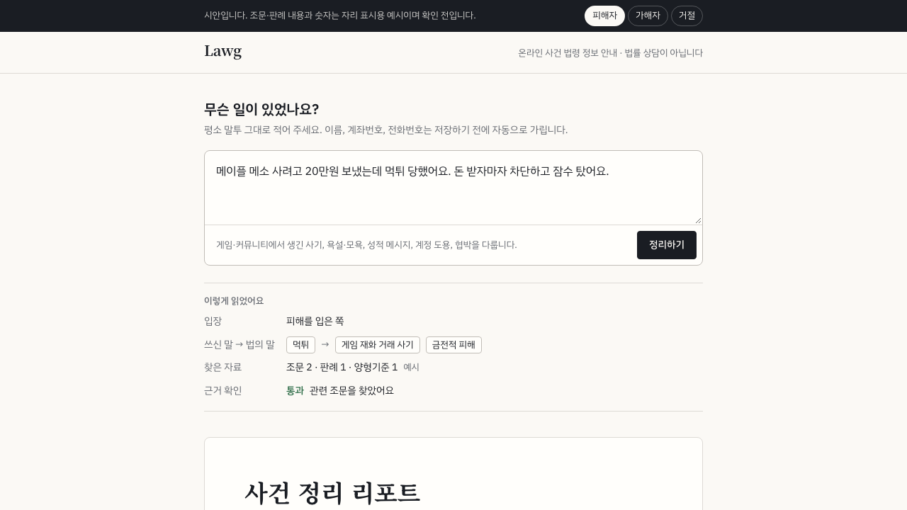
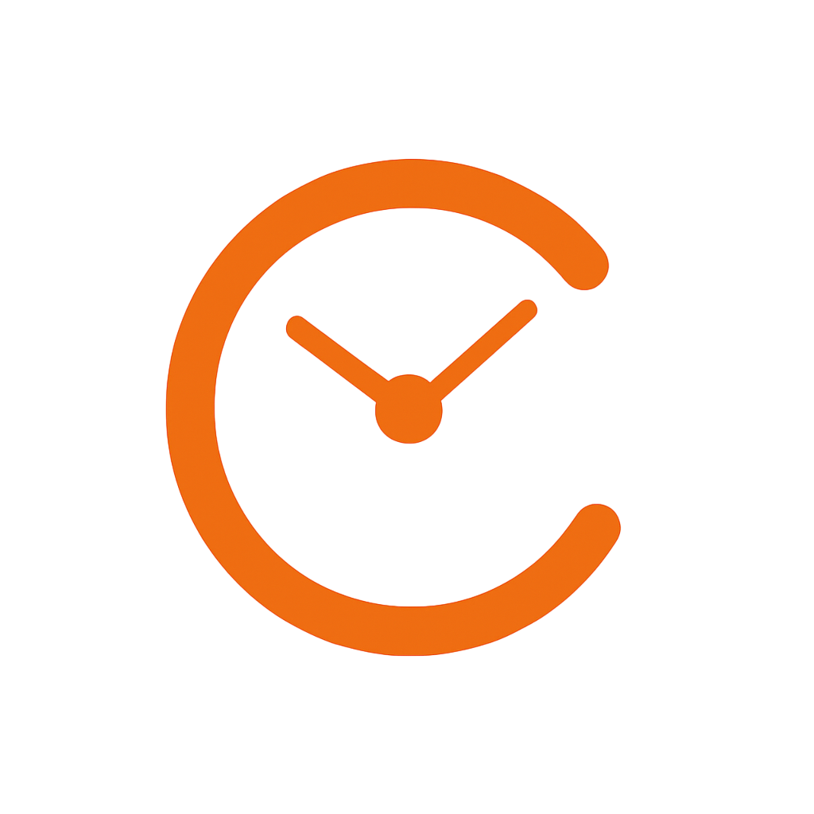

01 / INTERVIEW × AI
DEVELOPMENT / LLMOPS / DATA / INFRASTRUCTURE
SCROLL TO EXPLORE
01 / SELECTED WORK
만들며 쌓은 경험04
서비스를 만들고, AI를 연결하고,
그 결과를 확인합니다.
02 / RAG & LEGAL INFO

03 / COMPUTER VISION
GazeSignalAPI
WebcamVisionEvents
LOCAL PROCESSINGREST + WEBSOCKET
GazeSignal API
비전 API웹캠의 시각 신호를 구조화된 이벤트로
웹캠 영상을 로컬에서 분석해 대략적인 시선 방향, 얼굴 존재, 머리 자세를 전달합니다. 원본 영상 대신 파생된 신호를 REST와 WebSocket으로 연결합니다.
구현 내용
- 얼굴·눈·홍채 랜드마크와 solvePnP 기반 머리 자세 추정
- 5점·9점 캘리브레이션, 상태 평활화와 전환 안정화
- 최신 프레임 버퍼, 카메라 연결 해제와 느린 소비자 대응
- SQLite 세션 요약과 WebSocket 이벤트 구독
일반 웹캠 기반의 대략적인 방향 추정입니다. 집중도·감정·의도를 판정하지 않습니다.
04 / COMMUNITY × AI

chronote.관심사로 연결되는 대화AI MATCHING
Chronote
매칭·실시간 채팅같은 관심사를 가진 사람들을 연결하는 AI 매칭
관심 주제를 입력하면 한국어 임베딩으로 맞는 채팅방을 찾습니다. 적합한 방이 없으면 새로 만들고, 실시간 그룹 채팅으로 함께 공부합니다.
구현 내용
- FastAPI 한국어 임베딩 기반 채팅방 유사도 매칭
- STOMP·WebSocket 실시간 그룹 채팅
- MySQL 정형 데이터와 MongoDB 채팅 메시지 저장
- Node.js·Express에서 Java·Spring Boot로 마이그레이션
UI 데모는 기존 학습 관리 화면입니다. 현재 저장소의 전체 백엔드 기능을 실행하는 데모는 아닙니다.
02 / ABOUT ME
문제에서 시작해,
동작하는 결과까지.
안녕하세요.
소프트웨어 엔지니어 정지석입니다.
필요한 기능을 구현하는 것에서 한 걸음 더 나아가, 서비스의 흐름 안에서 기술이 어떤 역할을 하는지 고민합니다.
면접 서비스와 실시간 채팅을 개발하고, RAG 검색 평가와 비전 API로 경험을 넓혀가고 있습니다. 직접 만들고 확인하는 과정에서 더 나은 방법을 찾습니다.
GitHub에서 더 알아보기03 / TOOLKIT
필요한 곳에, 필요한 기술.
프로젝트에서 사용한 기술들
01
Backend & API
Java · Spring Boot · Python
FastAPI · REST · WebSocket
02
AI & Data
pgvector · PostgreSQL · MySQL
Gemini · OpenAI · OpenCV
03
Product & Delivery
React · Next.js · TypeScript
Docker · AWS EC2 · GitHub Actions
04 / JOURNEY
배우고, 만들어 온 과정.
2024.03 — 2026.08EDUCATION
단국대학교
소프트웨어학과
2025.12 — 2026.03GRADUATION PROJECT
ITPT
CS 기술 면접 준비 플랫폼 · 서비스 개발과 AI 연동
2025.06 — 2025.08TEAM PROJECT
Chronote
AI 기반 학습 관리 · 관심사 매칭과 실시간 채팅
05 / WHAT'S NEXT
다음 이야기를
함께 만들어 볼까요?
프로젝트 이야기부터 새로운 기회까지, 편하게 연락 주세요.